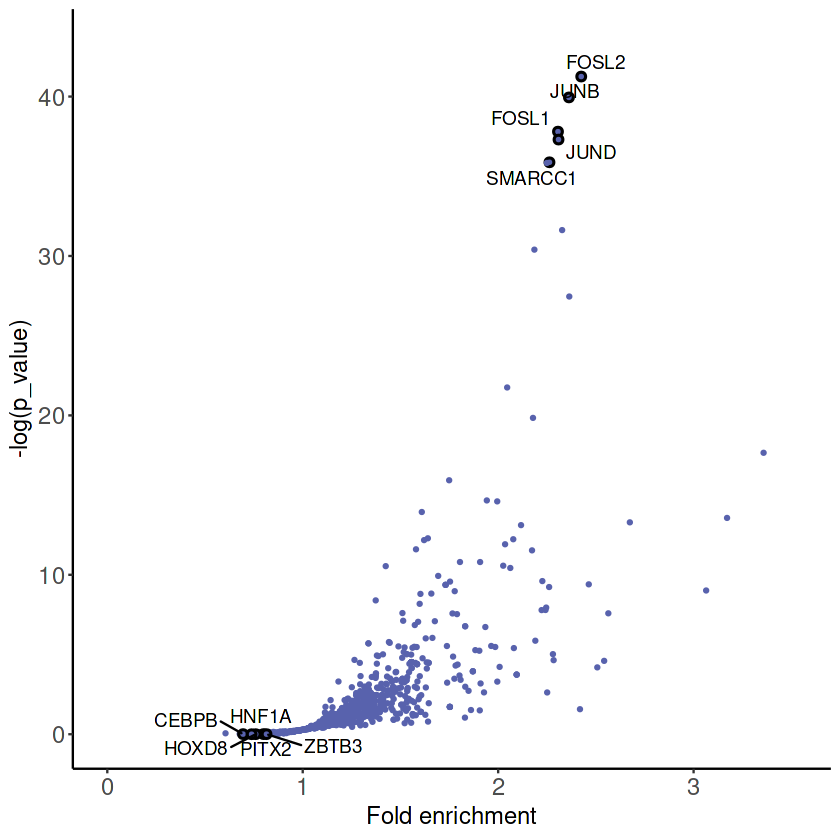
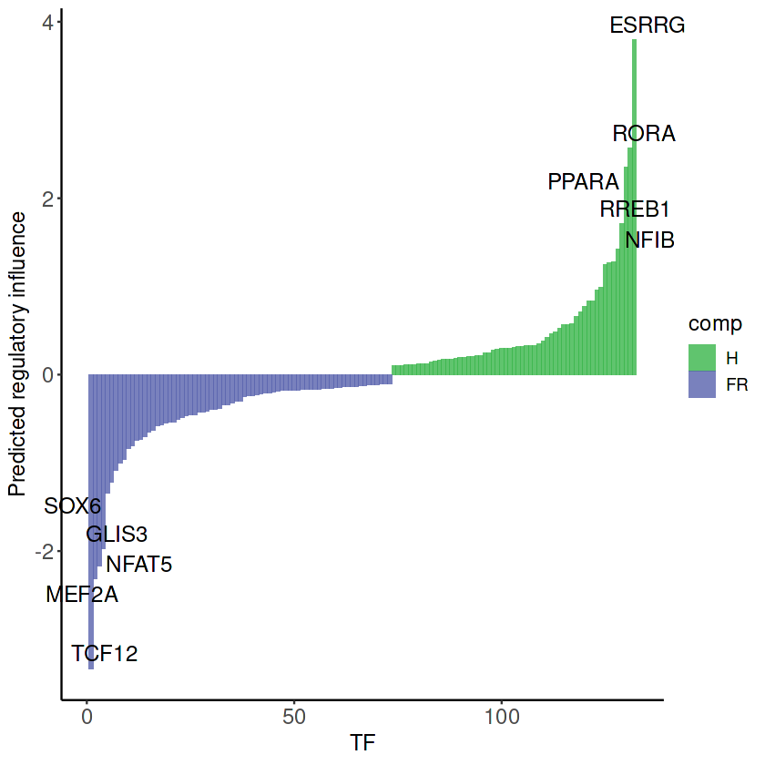

RENIN tutorial for single cell multiome datasets
Nicolas Ledru
2023-08-24
RENIN.RmdOverview
This is a tutorial for applying RENIN to a single nucleus multiome dataset.
For this tutorial, we will use an adult human kidney single cell dataset that we generated for this work. The full dataset can be downloaded from GEO or a smaller subsampled dataset is downloadable from this repository.
This tutorial starts after the creation, quality control, and preprocessing of a Seurat object and provides an example of how RENIN might be applied for regulatory element prediction.
Predicting CREs with RENIN
Generate pseudocell for CRE inference
RENIN can be used to predict regulators of differential expression between two cell states.
- We choose to pseudobulk using a modified version of VISION’s microclustering algorithm to reduce effects of sparsity and noise.
- On our ~50,000 cell dataset, targeting 100 cells per pseudocell was a good starting point.
mats <- prepare_pseudocell_matrix(multi, assay = c("peaks", "SCT"), cells_per_partition = 100)
expr_mat <- mats[["SCT"]]
peak_mat <- mats[["peaks"]]Predict CRE
A good starting point is modeling the genes that are differentially expressed.
mpt <- subset(multi, celltype %in% c("PCT", "PST", "KIM1+ PT"))
de.genes = prepare_degs(mpt, ident.1 = c("PCT", "PST"), ident.2 = "KIM1+ PT")
gene_list <- rownames(de.genes)[1:100]For its first step to predict CREs, we use the full dataset containing all cell types, because fewer CREs may have differential accessibility between two related cell types/states, relative to the accessibility differences between those two clusters and the rest of the dataset.
- We default to include all CREs in order to include all potential relevant regulatory TFs.
- For the adaptive elastic net step, lambda2 = 0.5 and num_bootstraps = 100 are good defaults to achieve good model performance and relatively short runtime.
peak_results <- run_peak_aen(multi, expr_mat, peak_mat, gene_list, lambda2 = 0.5, max_distance = 5e+05, num_bootstraps = 100)
aen_lists <- make_aen_lists(peak_results)[Optional] Visualize motif enrichment in the predicted CREs
[This section can be skipped].
As a starting point for analysis, we can look for motif enrichment in the predicted CREs. Of the modeled genes, we identify so-called “failed repair” genes as those that are upregulated in KIM1+ PT relative to the healthy PCT and PST clusters. We can plot motif enrichment in CREs that are predicted to promote a failed repair gene expression program.
fr_genes <- rownames(de.genes)[which(de.genes$avg_log2FC < 0)]
all_cres <- unique(unlist(aen_lists))
cre_scores <- lapply(peak_results, function(x) x[[4]][union(1, which(x[[4]][, "coef_if_kept"] != 0)), "coef_if_kept"] * ifelse(x[[1]] %in% fr_genes, -1, 1))
cre_scores <- cre_scores[which(unlist(lapply(cre_scores, length)) > 1)]
cre_total_scores <- bind_rows(cre_scores)
cre_total_scores[is.na(cre_total_scores)] <- 0
cre_total_scores <- cre_total_scores[,-1]
cre_total_scores_sums <- colSums(cre_total_scores)
cre_num_genes <- apply(cre_total_scores, 2, function(x) length(which(x != 0))) # how many genes each CRE targets
fr_cres <- names(cre_total_scores_sums)[which(cre_total_scores_sums < 0)]
h_cres <- names(cre_total_scores_sums)[which(cre_total_scores_sums > 0)]
plot_motif_enrichment(multi, fr_cres, num_top_label = 5)
Predicting gene-specific regulating TFs with RENIN
RENIN’s second step identifies TFs with motifs within the linked CREs, then runs an adaptive elastic net step to predict which TFs are likely to regulate the target gene.
Generate pseudocell for TF inference
Since we do not use the sparser chromatin accessibility modality for this step, we can target fewer (by default, 10) cells per pseudocell.
expr_mat <- prepare_pseudocell_matrix(mpt, assay = "SCT", cells_per_partition = 10)Predict CRE-specific TF effects
tf_results <- run_tf_aen(mpt, expr_mat, peak_results, gene_list, lambda2 = 0.5)
regulator_tf_names <- unlist(multi@assays$peaks@motifs@motif.names)
regulator_tf_names <- regulator_tf_names[which(regulator_tf_names %in% rownames(GetAssayData(multi, assay = "SCT")))]Visualize TF rankings
We can then rank TFs by predicted regulatory score.
- To calculate each TF’s score, we sum its estimated regulatory coefficients across all modeled genes, then weight by expression.
- If studying a trajectory, you can input a vector of genes to be weighted negatively. This allows for delineation between TFs that are associated with one side of the trajectory versus the other.
tf_df <- rank_tfs(tf_results, mpt, fr_genes, regulator_tf_names, num_cores = 1)
plot_tf_rankings(tf_df)
[Optional] Rank TFs by centrality
Since our ranking approach also factors in TF expression, it might be useful to rank TFs by centrality as well.
centrality_rankings <- rank_tfs_by_centrality(tf_results, mpt)
head(centrality_rankings[[1]], n = 10)
head(centrality_rankings[[2]], n = 10)ESRRG: 2362.5
FOSL2: 1891.5
MLXIPL: 0
MYCN: 0
TCF12: 0
ARNT2: 0
SREBF2: 0
BACH2: 0
JUN: 0
MAF: 0
BACH2: 0.00440082608429252
HNF4A: 0.00358041084460182
ARNT2: 0.0035757804040999
MEF2A: 0.00341289182564679
FOSL1: 0.00335173645748952
FOSL2: 0.00326196417548944
TCF12: 0.00325942429318295
KLF6: 0.00324040156752685
PPARA: 0.00323273905631062
NFAT5: 0.00310403256911354